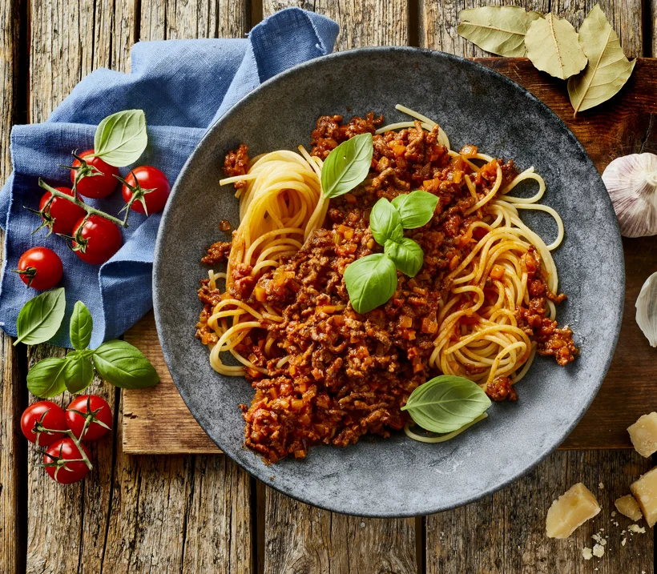

Spaghetti Bolognese

Description
Italian spaghetti bolognese may be one of the dishes for which the country is most well-known. The thick, rich consistency of the bolognese sauce and classic thin spaghetti makes for a hearty meal that works wonderfully as comfort food.
- 100g pancetta(italian,salt-cured pork belly),cut into thin slices
- 1 tbsp olive oil
- 1 onion (approx. 75g), finely chopped
- 1 carrot (approx. 75g),cut into very small pieces
- 2 celery stalks (approx.50g),cut into very small pieces
- 400 g minced beef (12% fat)
- 100 ml dry red wine or white wine
- 300 ml beef stock
- 100 ml concentraded tomato purée (100g)
- 2 bay leaves
- 1 tsp coarse salt
- Freshly churned pepper
- 100 ml semi-skimmed milk
Steps how to make Beatiful spaghetti
- Cut the pancetta into thin strips.
- Let the oil heat up in a large saucepan.
- Sauté onion, carrot, celery, and pancetta at medium heat for about 5 minutes.
- Add the minced beef, turn the heat up to high, and sear it for about 2 minutes.
- Add wine and let it evaporate for about 1 minute. Finally add beef stock, tomato purée, bay leaves, salt, and pepper
- Bring the bolognese to a boil and ocok it at lo heat for about 30 minutes with the lid on.
- Add milk and let it cook for at least 30 more minutes - preferably more - at the lowest heat
- Remove bay leaves and season the sauce to taste.
For Serving
- Cook the pasta according to the instruction on the package.
- Let it drain off in a colander and fold it into the bolognese
- Transfer the dish to a warm bowl, garnish with fresh herbs, and serve with freshly grated Parmesan cheese
Home